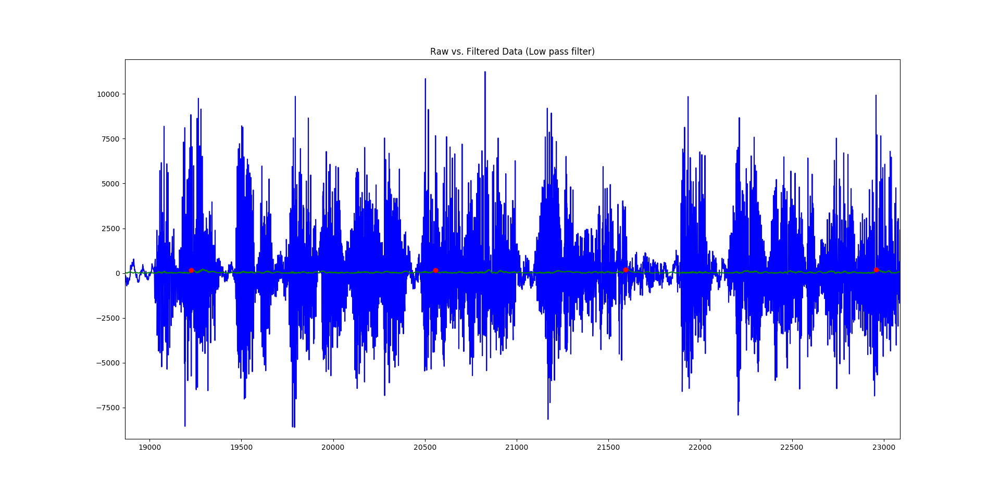
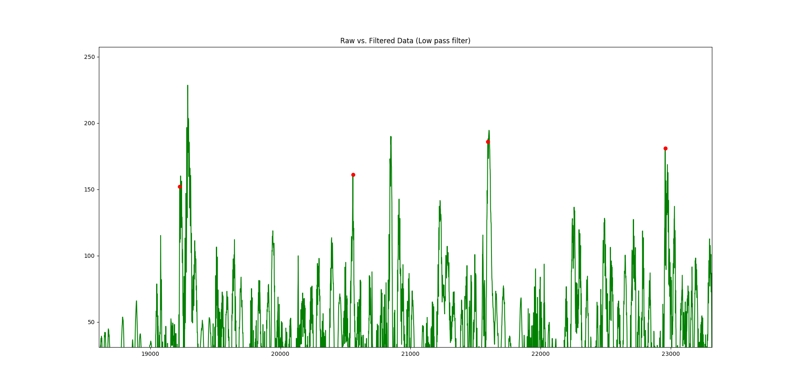

This was a personal project that I worked on in the Summer of 2018. The purpose of the project was to create an script that could take two audio files and create a musical mashup using them. The project currently only works in a very basic sense: one of the songs must have no instrumental track, and the other song must have no vocal track, and the songs kind of need to start with similar tempos. It was really quite basic, but has produced some good results thus far, which I’m rather proud of. Here is my favorite mashup; it is between Ratatat’s Loud Pipes and Eminem’s Lose Yourself. Just a fair warning, it has a bit of explicit content.
If you’re dying to see more SICK mashups like this, check out my soundcloud!
How it works
The songs that I used came in the form of .wav files, which is simply a file with a bunch of speaker amplitudes at given time steps (usually at a frequency of 44100Hz). The first thing that I do is attempt to determine the tempo of each song. The tempo of most songs is below 200 BPM, which corresponds to a frequency of roughly 3Hz. According to the Nyquist sampling theorem, we really don’t need the data to be at 44100Hz to detect a signal of 3Hz. As such, I first decided to down-sample the data, taking only every 44th data point. This means that I was left with a signal whose sampling frequency was roughly 1000Hz, which is much more manageable, and still leaves a lot of room for potential error in the tempo detection algorithm.
Using a buttersworth low pass filter, I first filtered both of the input songs. This naturally attenuated the high frequency noise of the signal and allowed me to hone in on the lower frequencies of the file, which will be better indicators of tempo. From there, I took the absolute value of the filtered signal and ran a basic peak detection algorithm on it.

Above is a graph showing the unfiltered signal in blue, the absolute value of the filtered signal in green, and interpreted peaks as red dots.

Above is a graph showing the absolute value of the filtered signal in green, and interpreted peaks as red dots. Some of the red dots are not on the best local maxima due to a minimum distance restriction placed on the peak detection algorithm.
Classifying the peaks gives one a good idea for candidate beats of the song. There could be many false positives, and many beats that failed to get detected, but thankfully, there is a way around this. Once all of the peaks were detected, the temporal distance between each peak and its “n” closest neighbors was found and recorded. This time is associated with a tempo, which is calculated and stored in a histogram. Once the histogram is fully completed, the most common tempo is then returned as the algorithm’s best guess for the tempo of the song. The reason why the “n” closest neighbors are considered is to give tolerance for peaks falsely labeled as beats. Because the entire song is used to generate candidate peaks, it is rather tolerant for beaks being failed to be classified as peaks.
Once the tempo is determined, one of the songs needs to have its tempo corrected in order to match the other. Currently, the project artificially changes the sampling frequency of the target song to change the tempo. This is not ideal, as simply changing the sampling frequency will not only change tempo, but it will also change pitch. To try and create a higher quality end product, both songs (in their full, un-downsampled forms) get populated with linearly interpolated data points for amplitude based off of the existing data points. This introduces an increased level of granularity in the frames of the music, which allows for a higher quality time shift to be made. Then, the song to be temporally changed is inserted at the correct sampling frequency. Because the two songs now have different sampling frequencies, the song that is inserted gets another round of linear time interpolation in order to place the samples at roughly the right spot.
Next Steps
This project was super fun to work on, and I am pretty proud of some of the results. That being said, there are so many ways that this project can be improved, many of which I wish to implement going into the future.
- Incorporate a Phase Vocoder or similar tool to allow me to change the tempo of songs independently of pitch
- Classify timestamps that corresponds to the actual beats of the song to better line up songs initially
- Classify the “intensity” of certain sections of each song, and dynamically adjust volumes to match each other
- Automize more the process by harvesting .wav files from online, and automatically posting results on soundcloud to share with friends, and potentially get human feedback to improve the algorithm
- Work to classify the musical key of each song to allow more complex musical mashups to be made. Hopefully this will allow me to lift the current restriction of isolated vocals and instrumental tracks